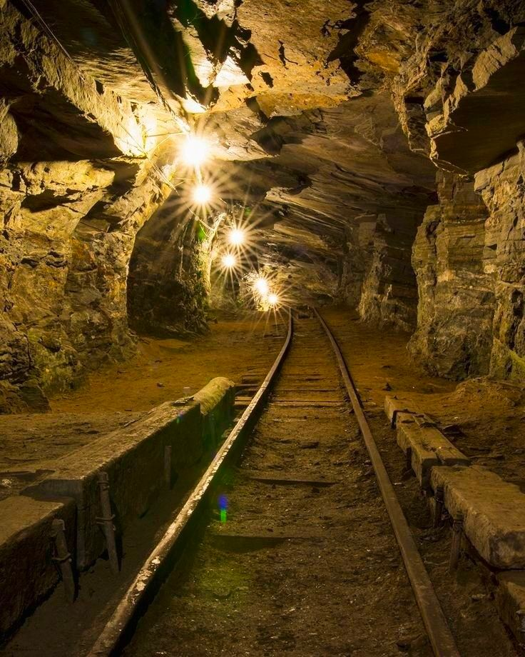
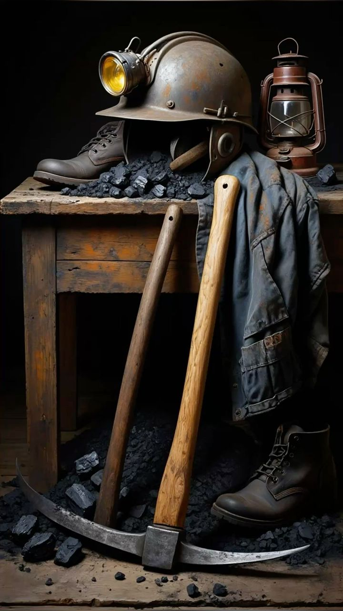
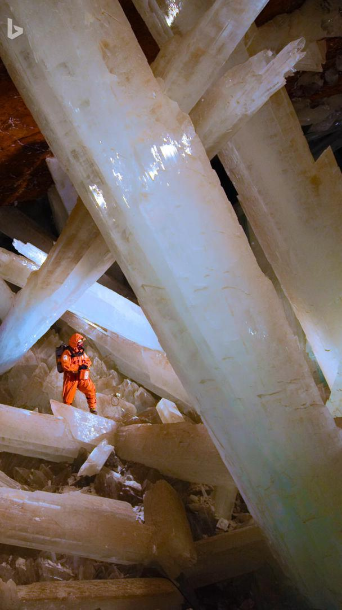
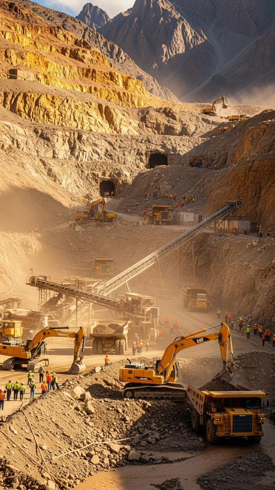
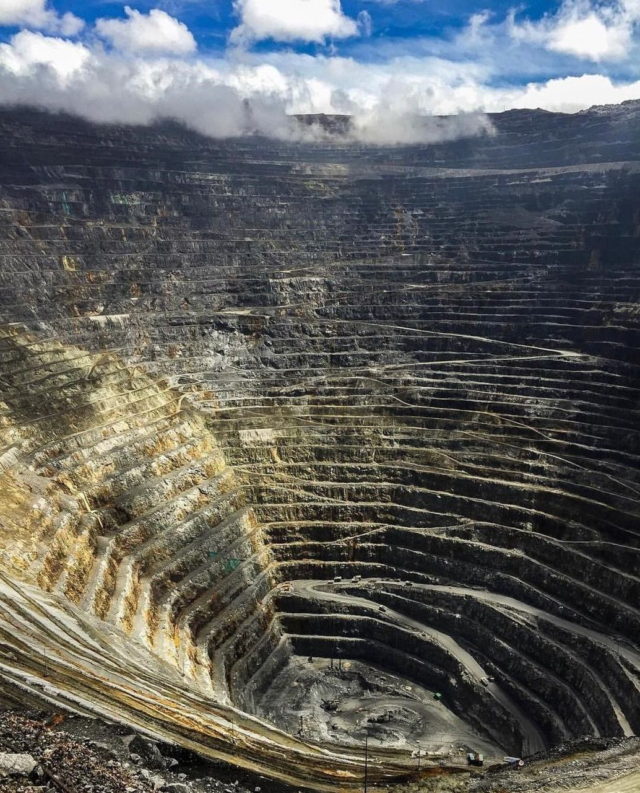
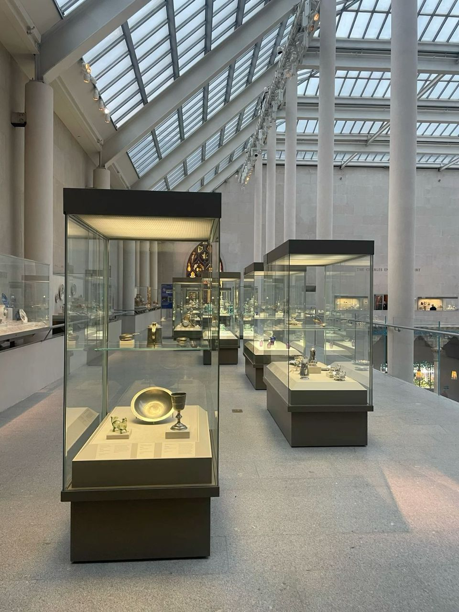

The founding story
Born in the Graubünden Highlands
In the winter of 1881, surveyor Heinrich Rüegg discovered an unusually rich quartz vein threading through the granite flanks of the Graubünden highlands. Within a year, he had filed mineral claims, assembled a crew of 40 men, and sunk the first shaft of what would become Switzerland's most enduring mining company.
The early years were gruelling — hand drills, candle-lit tunnels, and mule-drawn carts. Yet the quality of ore was exceptional. By 1895, Swiss Mining Co. was supplying gold and copper concentrate to refiners as far as Vienna and Lyon.
"The mountain gives nothing freely, but she keeps no secrets from those who listen carefully." — Heinrich Rüegg, Founder, 1881



Timeline
Key moments that shaped us
From hand-tools to autonomous sensors — each decade added new depth to our operations.
Foundation & First Claim
Heinrich Rüegg files the founding mineral claims in Graubünden. The first shaft is sunk by a crew of 40 using hand drills and blasting powder. Initial ore assays confirm exceptional gold and copper grades.
Zurich Headquarters Established
Rapid growth prompted the founding of a Zurich administrative office. Swiss Mining Co. becomes the first Alpine miner to publish annual production transparency reports.
Mechanised Extraction
Steam-powered and then electric drills replace hand tools. Output doubles within five years. The company hires its first professional geologists and safety engineers.
Post-war Expansion
Reconstruction demand across Europe drives strong copper orders. Two new sites are opened in the Valais and Uri cantons, tripling the company's active mine count.
Environmental Leadership
Swiss Mining Co. voluntarily adopts environmental controls a decade before Swiss law requires them. Tailings management and water treatment systems are installed across all sites.
ISO 9001 Certification
All operations receive ISO 9001 quality management certification. Digital record-keeping and process auditing begin replacing paper-based systems.
Digital Surveying Era
LiDAR mapping and underground drone surveying are deployed at four sites. Ore body modelling accuracy improves by 40%, reducing wasted extraction effort.
Six Sites, 1,800 People, One Standard
Swiss Mining Co. operates six active sites, employs 1,800 people across 12 Alpine communities, and produces over 4.2 tonnes of refined gold annually — still guided by the transparency Heinrich Rüegg built into the founding charter.



Heritage commitment
We preserve what the mountain gave us
Swiss Mining Co. maintains a comprehensive archive of site records, production logs, geological surveys, and community histories dating back to 1881. These documents are digitised, publicly accessible, and preserved in partnership with the Swiss Federal Archives.
- 12,000+ digitised historical documents
- Partnerships with 12 Alpine village communities
- Annual heritage reporting since 1905
- Museum-quality mineral collection open to visitors
- Educational programmes for local schools